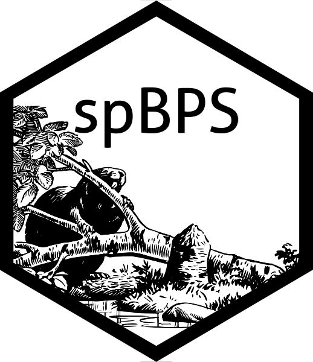

Evaluate the density of a set of unobserved response with respect to the conditional posterior predictive
d_pred_cpp_MvT.RdEvaluate the density of a set of unobserved response with respect to the conditional posterior predictive
Arguments
- data
list two elements: first named \(Y\), second named \(X\)
- X_u
matrix unobserved instances covariate matrix
- Y_u
matrix unobserved instances response matrix
- d_u
matrix unobserved instances distance matrix
- d_us
matrix cross-distance between unobserved and observed instances matrix
- hyperpar
list two elemets: first named \(\alpha\), second named \(\phi\)
- poster
list output from
fit_cppfunction
Value
double posterior predictive density evaluation